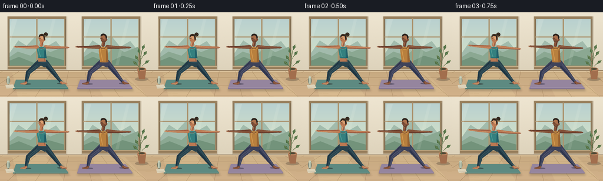
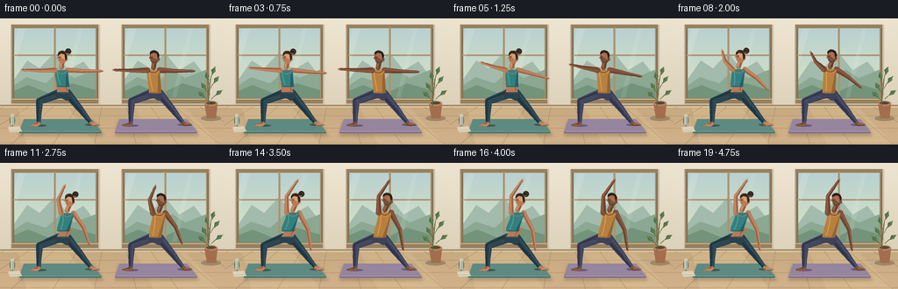
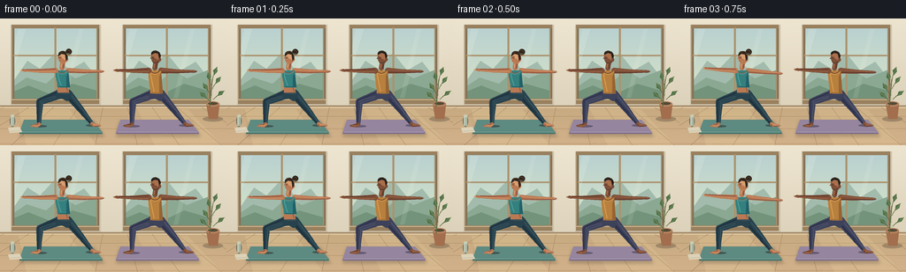
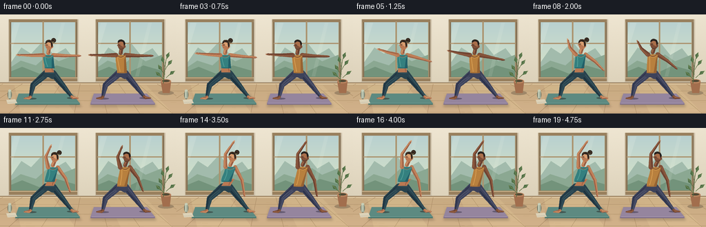

CODING AGENTS AS PIXEL WORLD MODELS
traex/GPT-6.1-Sol · instance_preservation_0031
点击播放 · 原生 RGB 像素
逐轮保存的候选
回放视频、检查图与代码变化。
每份候选均可单独播放。实际图片检查记录在下方工具轨迹中。
候选 01播放与检查图
点击播放 · 原生 RGB 像素


展开代码变化
--- 上一保存版本
+++ 本次保存版本
@@ -0,0 +1,255 @@
+from pathlib import Path
+import math
+import numpy as np
+from PIL import Image, ImageDraw, ImageFilter
+from artifact_io import save
+
+ROOT=Path(__file__).resolve().parent
+W,H,S=256,144,4
+rng=np.random.default_rng(12)
+
+def bezier(points,n=30):
+ p=np.array(points,float); t=np.linspace(0,1,n)[:,None]
+ if len(p)==4:
+ return (1-t)**3*p[0]+3*(1-t)**2*t*p[1]+3*(1-t)*t*t*p[2]+t**3*p[3]
+ return (1-t)**2*p[0]+2*(1-t)*t*p[1]+t*t*p[2]
+
+def poly(d,points,fill): d.polygon([(int(x*S),int(y*S)) for x,y in points],fill=fill)
+def line(d,points,fill,width=1):
+ pts=[(round(x*S),round(y*S)) for x,y in points]
+ d.line(pts,fill=fill,width=max(1,round(width*S)),joint='curve')
+def ellipse(d,box,fill):d.ellipse(tuple(round(v*S) for v in box),fill=fill)
+def curve(d,points,fill,width=1):line(d,bezier(points),fill,width)
+def limb(d,points,radii,color,light=None,shadow=None):
+ p=np.array(points,float)
+ # Smooth a polyline into a continuous, gently rounded anatomical silhouette.
+ if len(p)==3:
+ pts=np.concatenate([np.linspace(p[0],p[1],14),np.linspace(p[1],p[2],14)[1:]])
+ rad=np.r_[np.linspace(radii[0],radii[1],14),np.linspace(radii[1],radii[2],14)[1:]]
+ else:
+ pts=np.linspace(p[0],p[1],25); rad=np.linspace(radii[0],radii[-1],25)
+ tangent=np.gradient(pts,axis=0); tangent/=np.linalg.norm(tangent,axis=1)[:,None]
+ normal=np.c_[-tangent[:,1],tangent[:,0]]
+ poly(d,np.r_[pts+normal*rad[:,None],(pts-normal*rad[:,None])[::-1]],color)
+ for pt,r in zip(p,radii): ellipse(d,(pt[0]-r,pt[1]-r,pt[0]+r,pt[1]+r),color)
+ if shadow:
+ line(d,pts+normal*(rad*.57)[:,None],shadow,max(1,radii[-1]*.62))
+ if light:
+ line(d,pts-normal*(rad*.42)[:,None],light,max(.55,radii[-1]*.4))
+
+def background():
+ yy,xx=np.mgrid[0:H*S,0:W*S]
+ y=yy/S; x=xx/S
+ top=np.array([239,230,210]); bot=np.array([220,209,185])
+ a=np.minimum(y/109,1)[...,None]
+ arr=top*(1-a)+bot*a
+ vign=((x-118)/230)**2+((y-65)/180)**2
+ arr-=vign[...,None]*5
+ noise=rng.normal(0,.55,(H*S,W*S,1))
+ img=Image.fromarray(np.uint8(np.clip(arr+noise,0,255)),'RGB'); d=ImageDraw.Draw(img)
+ # Quiet plaster wall and two tall wood-framed windows.
+ for x0,x1 in [(13,112),(139,238)]:
+ poly(d,[(x0-1,7),(x1+2,7),(x1+2,99),(x0-1,99)],(207,195,172))
+ poly(d,[(x0+2,10),(x1-2,10),(x1-2,91),(x0+2,91)],(190,214,207))
+ for j in range(80):
+ t=j/80
+ line(d,[(x0+2,10+j),(x1-2,10+j)],(int(184+32*t),int(208+20*t),int(208-9*t)),1.15)
+ # Distant softly overlapping mountain contours.
+ poly(d,[(x0+2,71),(x0+18,48),(x0+32,57),(x0+49,39),(x0+65,59),(x0+82,49),(x1-2,68),(x1-2,91),(x0+2,91)],(162,187,172))
+ poly(d,[(x0+2,77),(x0+17,67),(x0+39,74),(x0+57,58),(x0+72,68),(x1-2,58),(x1-2,91),(x0+2,91)],(139,168,146))
+ poly(d,[(x0+2,83),(x0+19,76),(x0+44,86),(x0+69,74),(x1-2,82),(x1-2,91),(x0+2,91)],(115,147,123))
+ for xx0 in [x0,x1-3]:
+ poly(d,[(xx0,9),(xx0+3,9),(xx0+3,96),(xx0,96)],(134,114,86))
+ line(d,[(xx0+.6,9),(xx0+.6,96)],(181,158,119),.65)
+ poly(d,[(x0,7),(x1,7),(x1,11),(x0,11)],(152,128,94))
+ poly(d,[(x0,91),(x1,91),(x1,97),(x0,97)],(152,127,93))
+ line(d,[(x0,92),(x1,92)],(209,187,147),1.1)
+ mid=(x0+x1)/2
+ poly(d,[(mid-1,10),(mid+1,10),(mid+1,92),(mid-1,92)],(171,147,110))
+ line(d,[(x0+2,42),(x1-3,42)],(171,147,110),1.7)
+ # Reflections in the glazing.
+ overlay=Image.new('RGBA',img.size); od=ImageDraw.Draw(overlay)
+ poly(od,[(x0+7,12),(x0+16,12),(x0+3,55),(x0+3,31)],(255,255,241,34))
+ poly(od,[(x1-23,12),(x1-18,12),(x1-37,90),(x1-42,90)],(255,255,241,23))
+ img=Image.alpha_composite(img.convert('RGBA'),overlay).convert('RGB');d=ImageDraw.Draw(img)
+ # Thin skirting and honey-coloured oak floor, in perspective.
+ poly(d,[(0,100),(256,100),(256,144),(0,144)],(192,161,119))
+ for j in range(44):
+ c=(int(199+j*.25),int(170+j*.17),int(129+j*.22))
+ line(d,[(0,100+j),(256,100+j)],c,1.05)
+ line(d,[(0,99),(256,99)],(144,122,93),1)
+ line(d,[(0,101),(256,101)],(228,206,169),1)
+ for x0 in range(-80,340,28):
+ xend=128+(x0-128)*1.7
+ line(d,[(x0,101),(xend,144)],(166,135,97),.4)
+ for y0 in [111,125,142]:line(d,[(0,y0),(256,y0)],(175,145,106),.45)
+ for k in range(45):
+ x=rng.uniform(0,256);y=rng.uniform(105,144)
+ line(d,[(x,y),(x+rng.uniform(5,15),y+.15)],(194,161,117),.25)
+ # Sunlight cast on the floor.
+ ov=Image.new('RGBA',img.size);od=ImageDraw.Draw(ov)
+ poly(od,[(21,103),(78,103),(109,144),(30,144)],(255,235,176,38))
+ poly(od,[(155,103),(212,103),(251,144),(175,144)],(255,235,176,32))
+ img=Image.alpha_composite(img.convert('RGBA'),ov).convert('RGB')
+ return img
+
+BASE=background()
+
+def mat(img,x,color):
+ shadow=Image.new('RGBA',img.size);d=ImageDraw.Draw(shadow)
+ poly(d,[(x-44,117),(x+36,116),(x+48,134),(x-48,134)],(57,48,35,60))
+ shadow=shadow.filter(ImageFilter.GaussianBlur(S*1.8));img=Image.alpha_composite(img.convert('RGBA'),shadow).convert('RGB');d=ImageDraw.Draw(img)
+ poly(d,[(x-43,116),(x+34,116),(x+46,131),(x-48,131)],tuple(max(0,c-21) for c in color))
+ poly(d,[(x-43,115),(x+34,115),(x+46,129.7),(x-48,129.7)],color)
+ line(d,[(x-46,128.8),(x+44,128.8)],tuple(min(255,c+31) for c in color),.55)
+ for i in range(1,12):
+ yy=116+i
+ line(d,[(x-43-i*.35,yy),(x+34+i*.74,yy)],tuple(c+4 for c in color),.18)
+ return img
+
+def plant(img,t):
+ d=ImageDraw.Draw(img)
+ ellipse(d,(229,111,252,117),(159,135,104))
+ poly(d,[(233,97),(248,97),(246,114),(236,114)],(162,110,77))
+ ellipse(d,(233,94,248,100),(184,131,94))
+ ellipse(d,(235,95,246,98),(80,73,54))
+ line(d,[(237,100),(240,69)],(87,107,65),1)
+ for bx,by,ex,ey in [(239,87,230,73),(240,80,250,66),(239,76,235,61),(238,94,226,83),(241,92,254,82),(240,71,245,55)]:
+ ex+=.4*math.sin(t+by)
+ curve(d,[(bx,by),((bx+ex)/2-2,(by+ey)/2),(ex,ey)],(93,112,68),.7)
+ p=np.array([ex,ey]);q=np.array([bx,by]);v=q-p;v/=np.linalg.norm(v);n=np.array([-v[1],v[0]])
+ leaf=[p,p+v*5+n*3,p+v*10,p+v*5-n*2]
+ poly(d,leaf,(80,112,71));line(d,[p,p+v*8],(132,151,94),.4)
+ return img
+
+
+def person(img,cx,s,who,t):
+ d=ImageDraw.Draw(img)
+ if who==0:
+ skin=(186,121,83); skinlit=(218,158,112); skinsh=(143,86,65)
+ pants=(40,66,77); pantlit=(59,88,96); pantsh=(29,48,60)
+ shirt=(52,128,127); shirtlight=(83,160,152); shirtshadow=(34,96,105)
+ hair=(48,38,31)
+ else:
+ skin=(127,79,56); skinlit=(170,111,75); skinsh=(98,58,45)
+ pants=(61,66,90); pantlit=(84,89,113); pantsh=(43,49,73)
+ shirt=(184,128,62);shirtlight=(216,158,82);shirtshadow=(151,99,50)
+ hair=(35,31,29)
+ # A settled, grounded Warrior stance, breathing into Reverse Warrior.
+ breath=.30*math.sin(t*2*math.pi/5)
+ hip=np.array([cx,85+breath])
+ sh=np.array([cx-2+8*s,59-2*s+breath])
+ front_hip=hip+[-5,1]; back_hip=hip+[5,1]
+ fk=np.array([cx-24,102.5]); fa=np.array([cx-28,120])
+ bk=np.array([cx+19,103]);ba=np.array([cx+32,119.5])
+ # Contact shadows beneath the feet.
+ ellipse(d,(cx-36,121,cx-19,123.6),(65,87,82) if who==0 else (101,91,114))
+ ellipse(d,(cx+25,120,cx+42,122.8),(65,87,82) if who==0 else (101,91,114))
+ # Far leg and bare foot.
+ limb(d,[back_hip,bk,ba],[5.0,3.7,2.1],pants,pantlit,pantsh)
+ limb(d,[ba,(cx+34,121),(cx+41,121.5)],[2.0,2.0,.85],skin,skinlit,skinsh)
+ curve(d,[(cx+33,121.6),(cx+36,120.2),(cx+40.5,121.7)],skinlit,.6)
+ for j in range(3): line(d,[(cx+38+j*.9,121),(cx+38+j*.9,122)],skinsh,.25)
+ # Bent leading leg, the thigh and calf remain aligned throughout the motion.
+ limb(d,[front_hip,fk,fa],[5.3,4,2.1],pants,pantlit,pantsh)
+ limb(d,[fa,(cx-30,121.5),(cx-37,122)],[2,2.1,.85],skin,skinlit,skinsh)
+ line(d,[(cx-36,121.2),(cx-30,120.9)],skinlit,.65)
+ for j in range(3):line(d,[(cx-36+j,121.4),(cx-36+j,122.5)],skinsh,.25)
+ curve(d,[front_hip+[-2,3],(cx-23,98),(cx-24,103)],pantlit,.7)
+ curve(d,[(cx+7,91),(cx+15,101),(cx+22,107)],pantsh,.7)
+ # Pelvis and waist: rounded continuous silhouette, not stick joints.
+ poly(d,[(cx-8,81),(cx+7,81),(cx+9,89),(cx+4,94),(cx-2,91),(cx-9,91)],pants)
+ curve(d,[(cx-7,84),(cx+1,86),(cx+7,85)],pantlit,.65)
+ sl=sh+[-7,0];sr=sh+[7,0]
+ # The rear hand glides down the trailing thigh while the leading arm arcs up.
+ er=(1-s)*np.array([cx+23,60])+s*np.array([cx+23,76])
+ wr=(1-s)*np.array([cx+41,60])+s*np.array([cx+26,96])
+ limb(d,[sr,er,wr],[2.8 if who==0 else 3.25,2.15,1.35],skin,skinlit,skinsh)
+ v=wr-er;v=v/np.linalg.norm(v)
+ hand=wr+v*3.0
+ limb(d,[wr,hand],[1.45,1.0],skin,skinlit,skinsh)
+ for i in range(3):
+ n=np.array([-v[1],v[0]])
+ line(d,[hand+n*(i-1)*.55,hand+v*1.7+n*(i-1)*.55],skinsh,.35)
+ # Bare midriff on the female; a long athletic tank on the male.
+ if who==0:
+ poly(d,[(sh[0]-6,74),(sh[0]+6,74),(cx+6,84),(cx-7,84)],skin)
+ curve(d,[(sh[0]+3,76),(cx+4,79),(cx+4,83)],skinsh,.7)
+ bottom=78 if who==0 else 85
+ torso=np.r_[bezier([sl,sl+[-1,9],(cx-7,bottom-7),(cx-7,bottom)],18),
+ bezier([(cx-7,bottom),(cx,bottom+1),(cx+7,bottom)],12),
+ bezier([(cx+7,bottom),(cx+6,bottom-10),sr+[1,8],sr],18)]
+ poly(d,torso,shirt)
+ poly(d,[sr+[0,2],sr+[-2,7],(cx+3,bottom),(cx+7,bottom)],shirtshadow)
+ curve(d,[sl+[2,3],sl+[3,10],(cx-3,bottom-2)],shirtlight,1.1)
+ line(d,[(cx-6,bottom-.5),(cx+6,bottom-.5)],shirtshadow,.75)
+ # Tank neckline and shoulder straps.
+ neckbase=sh+[0,-3]
+ limb(d,[neckbase,neckbase+[.8+1.6*s,-5]],[2.65,2.6],skin,skinlit,skinsh)
+ curve(d,[sl+[1,0],sh+[0,6],sr+[-1,0]],skinsh,.7)
+ curve(d,[sl+[1,1],sh+[0,7],sr+[-1,1]],shirtlight,.7)
+ # Leading arm: horizontal initially, lifted in an anatomically smooth arc.
+ el=(1-s)*np.array([cx-27,59.5])+s*np.array([cx-1,38])
+ wl=(1-s)*np.array([cx-44,59])+s*np.array([cx+10,22])
+ limb(d,[sl,el,wl],[2.8 if who==0 else 3.2,2.05,1.25],skin,skinlit,skinsh)
+ vl=wl-el;vl/=np.linalg.norm(vl);nl=np.array([-vl[1],vl[0]])
+ hl=wl+vl*3
+ limb(d,[wl,hl],[1.45,.95],skin,skinlit,skinsh)
+ for j in range(3):line(d,[hl+nl*(j-1)*.65,hl+vl*2+nl*(j-1)*.55],skinlit,.48)
+ line(d,[wl+nl*1.15,wl+vl*2+nl*1.8],skinlit,.6)
+ # Neck and softly modeled head, three-quarter view towards leading hand.
+ head=np.array([sh[0]+1+2*s,45-2*s+breath])
+ hx,hy=head
+ ellipse(d,(hx-5.3,hy-8.2,hx+5.6,hy+6.3),skin)
+ ellipse(d,(hx-4.5,hy-6.1,hx+3.2,hy+4.5),skinlit)
+ poly(d,[(hx-4.4,hy-2),(hx-6.5,hy+.4),(hx-4.3,hy+1.1),(hx-3.5,hy+4.8),(hx-.2,hy+6),(hx+4,hy+3)],skin)
+ ellipse(d,(hx+3.2,hy-.6,hx+5.9,hy+3.4),skin)
+ curve(d,[(hx+4,hy+.5),(hx+5,hy+.2),(hx+4.2,hy+2)],skinsh,.5)
+ # Hair remains the same style in every frame.
+ if who==0:
+ hairpoly=np.r_[bezier([(hx-5,hy-2),(hx-6,hy-11),(hx+6,hy-10),(hx+5.4,hy+1)],25),
+ np.array([[hx+3.5,hy+3],[hx+2.5,hy-4],[hx-1.7,hy-5],[hx-5,hy-2]])]
+ poly(d,hairpoly,hair)
+ ellipse(d,(hx+3.2,hy-10.7,hx+10,hy-4),hair)
+ curve(d,[(hx+3.9,hy-9),(hx+8,hy-10),(hx+8.5,hy-6)],(87,64,43),.6)
+ curve(d,[(hx-3.5,hy-6),(hx,hy-10),(hx+4,hy-6)],(82,61,43),.65)
+ line(d,[(hx+4,hy-5.1),(hx+7.4,hy-4.9)],(164,162,111),.65)
+ else:
+ hairpoly=np.r_[bezier([(hx-5.2,hy-4),(hx-6,hy-10.1),(hx+5,hy-11),(hx+5.7,hy-2.1)],25),np.array([[hx+3.8,hy+.3],[hx+2.8,hy-5.1],[hx-1,hy-6],[hx-5.2,hy-4]])]
+ poly(d,hairpoly,hair)
+ curve(d,[(hx-3.5,hy-7.3),(hx+.7,hy-9.5),(hx+4,hy-6.4)],(65,52,40),.65)
+ curve(d,[(hx-3.6,hy+3.8),(hx,hy+6.6),(hx+3.1,hy+3.6)],(86,58,45),1)
+ # Eyes, eyebrows, lips: minimal lines stay legible at output resolution.
+ line(d,[(hx-4,hy-1.8),(hx-1.7,hy-2.0)],hair,.55)
+ curve(d,[(hx-4.2,hy-.7),(hx-3,hy-.1),(hx-1.8,hy-.7)],(65,47,39),.47)
+ line(d,[(hx-4.4,hy+2.6),(hx-2.3,hy+2.8)],skinsh,.48)
+ line(d,[(hx-3,hy+3.9),(hx-1.6,hy+4)],skinlit,.35)
+ return img
+
+
+def generate():
+ frames=[]
+ for i in range(20):
+ t=i/4
+ # Gentle synchronous inhale then a steady hold with small natural breathing.
+ u=np.clip((t-.25)/3.4,0,1)
+ s=u*u*(3-2*u)
+ im=BASE.copy()
+ im=mat(im,70,(92,137,128));im=mat(im,179,(148,132,157))
+ im=plant(im,t)
+ # Small linen towel and a ceramic water bottle, out of the poses' way.
+ d=ImageDraw.Draw(im)
+ poly(d,[(9,124),(22,123),(25,129),(11,130)],(220,210,184))
+ line(d,[(11,128),(23,127)],(170,164,145),.6)
+ ellipse(d,(11,110,17,123),(106,111,95))
+ poly(d,[(12,110),(16,110),(16,122),(12,122)],(171,183,163))
+ ellipse(d,(12,109,16,112),(198,205,181));line(d,[(13,111),(13,121)],(214,218,197),.7)
+ im=person(im,72,s,0,t)
+ # Partner's motion is slightly delayed, without changing the final pose.
+ u2=np.clip((t-.45)/3.25,0,1);s2=u2*u2*(3-2*u2)
+ im=person(im,177,s2,1,t+.25)
+ im=im.resize((W,H),Image.Resampling.LANCZOS)
+ frames.append(np.asarray(im,dtype=np.uint8))
+ save(np.stack(frames),ROOT)
+
+if __name__=='__main__':generate()
候选 02播放与检查图
点击播放 · 原生 RGB 像素


展开代码变化
--- 上一保存版本
+++ 本次保存版本
@@ -140,7 +140,7 @@
hip=np.array([cx,85+breath])
sh=np.array([cx-2+8*s,59-2*s+breath])
front_hip=hip+[-5,1]; back_hip=hip+[5,1]
- fk=np.array([cx-24,102.5]); fa=np.array([cx-28,120])
+ fk=np.array([cx-27,94.5]); fa=np.array([cx-28,120])
bk=np.array([cx+19,103]);ba=np.array([cx+32,119.5])
# Contact shadows beneath the feet.
ellipse(d,(cx-36,121,cx-19,123.6),(65,87,82) if who==0 else (101,91,114))
@@ -155,7 +155,7 @@
limb(d,[fa,(cx-30,121.5),(cx-37,122)],[2,2.1,.85],skin,skinlit,skinsh)
line(d,[(cx-36,121.2),(cx-30,120.9)],skinlit,.65)
for j in range(3):line(d,[(cx-36+j,121.4),(cx-36+j,122.5)],skinsh,.25)
- curve(d,[front_hip+[-2,3],(cx-23,98),(cx-24,103)],pantlit,.7)
+ curve(d,[front_hip+[-2,2],(cx-23,91),(cx-27,94.5)],pantlit,.7)
curve(d,[(cx+7,91),(cx+15,101),(cx+22,107)],pantsh,.7)
# Pelvis and waist: rounded continuous silhouette, not stick joints.
poly(d,[(cx-8,81),(cx+7,81),(cx+9,89),(cx+4,94),(cx-2,91),(cx-9,91)],pants)
可观测工具轨迹
实际执行的命令与返回图片。
命令 1exit 0
/bin/bash -lc 'ls -la && cat prompt.txt && cat GENERATION_RULES.md && cat task_spec.json'
命令 2exit 0
/bin/bash -lc "cat artifact_io.py && python - <<'PY' import importlib.util for n in ['numpy','PIL','scipy']: print(n, bool(importlib.util.find_spec(n))) PY"
命令 3exit 0
/bin/bash -lc "cat > generate.py <<'PY'
from pathlib import Path
import math
import numpy as np
from PIL import Image, ImageDraw, ImageFilter
from artifact_io import save
ROOT=Path(__file__).resolve().parent
W,H,S=256,144,4
rng=np.random.default_rng(12)
def bezier(points,n=30):
p=np.array(points,float); t=np.linspace(0,1,n)[:,None]
if len(p)==4:
return (1-t)**3*p[0]+3*(1-t)**2*t*p[1]+3*(1-t)*t*t*p[2]+t**3*p[3]
return (1-t)**2*p[0]+2*(1-t)*t*p[1]+t*t*p[2]
def poly(d,points,fill): d.polygon([(int(x*S),int(y*S)) for x,y in points],fill=fill)
def line(d,points,fill,width=1):
pts=[(round(x*S),round(y*S)) for x,y in points]
d.line(pts,fill=fill,width=max(1,round(width*S)),joint='curve')
def ellipse(d,box,fill):d.ellipse(tuple(round(v*S) for v in box),fill=fill)
def curve(d,points,fill,width=1):line(d,bezier(points),fill,width)
def limb(d,points,radii,color,light=None,shadow=None):
p=np.array(points,float)
# Smooth a polyline into a continuous, gently rounded anatomical silhouette.
if len(p)==3:
pts=np.concatenate([np.linspace(p[0],p[1],14),np.linspace(p[1],p[2],14)[1:]])
rad=np.r_[np.linspace(radii[0],radii[1],14),np.linspace(radii[1],radii[2],14)[1:]]
else:
pts=np.linspace(p[0],p[1],25); rad=np.linspace(radii[0],radii[-1],25)
tangent=np.gradient(pts,axis=0); tangent/=np.linalg.norm(tangent,axis=1)[:,None]
normal=np.c_[-tangent[:,1],tangent[:,0]]
poly(d,np.r_[pts+normal*rad[:,None],(pts-normal*rad[:,None])[::-1]],color)
for pt,r in zip(p,radii): ellipse(d,(pt[0]-r,pt[1]-r,pt[0]+r,pt[1]+r),color)
if shadow:
line(d,pts+normal*(rad*.57)[:,None],shadow,max(1,radii[-1]*.62))
if light:
line(d,pts-normal*(rad*.42)[:,None],light,max(.55,radii[-1]*.4))
def background():
yy,xx=np.mgrid[0:H*S,0:W*S]
y=yy/S; x=xx/S
top=np.array([239,230,210]); bot=np.array([220,209,185])
a=np.minimum(y/109,1)[...,None]
arr=top*(1-a)+bot*a
vign=((x-118)/230)**2+((y-65)/180)**2
arr-=vign[...,None]*5
noise=rng.normal(0,.55,(H*S,W*S,1))
img=Image.fromarray(np.uint8(np.clip(arr+noise,0,255)),'RGB'); d=ImageDraw.Draw(img)
# Quiet plaster wall and two tall wood-framed windows.
for x0,x1 in [(13,112),(139,238)]:
poly(d,[(x0-1,7),(x1+2,7),(x1+2,99),(x0-1,99)],(207,195,172))
poly(d,[(x0+2,10),(x1-2,10),(x1-2,91),(x0+2,91)],(190,214,207))
for j in range(80):
t=j/80
line(d,[(x0+2,10+j),(x1-2,10+j)],(int(184+32*t),int(208+20*t),int(208-9*t)),1.15)
# Distant softly overlapping mountain contours.
poly(d,[(x0+2,71),(x0+18,48),(x0+32,57),(x0+49,39),(x0+65,59),(x0+82,49),(x1-2,68),(x1-2,91),(x0+2,91)],(162,187,172))
poly(d,[(x0+2,77),(x0+17,67),(x0+39,74),(x0+57,58),(x0+72,68),(x1-2,58),(x1-2,91),(x0+2,91)],(139,168,146))
poly(d,[(x0+2,83),(x0+19,76),(x0+44,86),(x0+69,74),(x1-2,82),(x1-2,91),(x0+2,91)],(115,147,123))
for xx0 in [x0,x1-3]:
poly(d,[(xx0,9),(xx0+3,9),(xx0+3,96),(xx0,96)],(134,114,86))
line(d,[(xx0+.6,9),(xx0+.6,96)],(181,158,119),.65)
poly(d,[(x0,7),(x1,7),(x1,11),(x0,11)],(152,128,94))
poly(d,[(x0,91),(x1,91),(x1,97),(x0,97)],(152,127,93))
line(d,[(x0,92),(x1,92)],(209,187,147),1.1)
mid=(x0+x1)/2
poly(d,[(mid-1,10),(mid+1,10),(mid+1,92),(mid-1,92)],(171,147,110))
line(d,[(x0+2,42),(x1-3,42)],(171,147,110),1.7)
# Reflections in the glazing.
overlay=Image.new('RGBA',img.size); od=ImageDraw.Draw(overlay)
poly(od,[(x0+7,12),(x0+16,12),(x0+3,55),(x0+3,31)],(255,255,241,34))
poly(od,[(x1-23,12),(x1-18,12),(x1-37,90),(x1-42,90)],(255,255,241,23))
img=Image.alpha_composite(img.convert('RGBA'),overlay).convert('RGB');d=ImageDraw.Draw(img)
# Thin skirting and honey-coloured oak floor, in perspective.
poly(d,[(0,100),(256,100),(256,144),(0,144)],(192,161,119))
for j in range(44):
c=(int(199+j*.25),int(170+j*.17),int(129+j*.22))
line(d,[(0,100+j),(256,100+j)],c,1.05)
line(d,[(0,99),(256,99)],(144,122,93),1)
line(d,[(0,101),(256,101)],(228,206,169),1)
for x0 in range(-80,340,28):
xend=128+(x0-128)*1.7
line(d,[(x0,101),(xend,144)],(166,135,97),.4)
for y0 in [111,125,142]:line(d,[(0,y0),(256,y0)],(175,145,106),.45)
for k in range(45):
x=rng.uniform(0,256);y=rng.uniform(105,144)
line(d,[(x,y),(x+rng.uniform(5,15),y+.15)],(194,161,117),.25)
# Sunlight cast on the floor.
ov=Image.new('RGBA',img.size);od=ImageDraw.Draw(ov)
poly(od,[(21,103),(78,103),(109,144),(30,144)],(255,235,176,38))
poly(od,[(155,103),(212,103),(251,144),(175,144)],(255,235,176,32))
img=Image.alpha_composite(img.convert('RGBA'),ov).convert('RGB')
return img
BASE=background()
def mat(img,x,color):
shadow=Image.new('RGBA',img.size);d=ImageDraw.Draw(shadow)
poly(d,[(x-44,117),(x+36,116),(x+48,134),(x-48,134)],(57,48,35,60))
shadow=shadow.filter(ImageFilter.GaussianBlur(S*1.8));img=Image.alpha_composite(img.convert('RGBA'),shadow).convert('RGB');d=ImageDraw.Draw(img)
poly(d,[(x-43,116),(x+34,116),(x+46,131),(x-48,131)],tuple(max(0,c-21) for c in color))
poly(d,[(x-43,115),(x+34,115),(x+46,129.7),(x-48,129.7)],color)
line(d,[(x-46,128.8),(x+44,128.8)],tuple(min(255,c+31) for c in color),.55)
for i in range(1,12):
yy=116+i
line(d,[(x-43-i*.35,yy),(x+34+i*.74,yy)],tuple(c+4 for c in color),.18)
return img
def plant(img,t):
d=ImageDraw.Draw(img)
ellipse(d,(229,111,252,117),(159,135,104))
poly(d,[(233,97),(248,97),(246,114),(236,114)],(162,110,77))
ellipse(d,(233,94,248,100),(184,131,94))
ellipse(d,(235,95,246,98),(80,73,54))
line(d,[(237,100),(240,69)],(87,107,65),1)
for bx,by,ex,ey in [(239,87,230,73),(240,80,250,66),(239,76,235,61),(238,94,226,83),(241,92,254,82),(240,71,245,55)]:
ex+=.4*math.sin(t+by)
curve(d,[(bx,by),((bx+ex)/2-2,(by+ey)/2),(ex,ey)],(93,112,68),.7)
p=np.array([ex,ey]);q=np.array([bx,by]);v=q-p;v/=np.linalg.norm(v);n=np.array([-v[1],v[0]])
leaf=[p,p+v*5+n*3,p+v*10,p+v*5-n*2]
poly(d,leaf,(80,112,71));line(d,[p,p+v*8],(132,151,94),.4)
return img
def person(img,cx,s,who,t):
d=ImageDraw.Draw(img)
if who==0:
skin=(186,121,83); skinlit=(218,158,112); skinsh=(143,86,65)
pants=(40,66,77); pantlit=(59,88,96); pantsh=(29,48,60)
shirt=(52,128,127); shirtlight=(83,160,152); shirtshadow=(34,96,105)
hair=(48,38,31)
else:
skin=(127,79,56); skinlit=(170,111,75); skinsh=(98,58,45)
pants=(61,66,90); pantlit=(84,89,113); pantsh=(43,49,73)
shirt=(184,128,62);shirtlight=(216,158,82);shirtshadow=(151,99,50)
hair=(35,31,29)
# A settled, grounded Warrior stance, breathing into Reverse Warrior.
breath=.30*math.sin(t*2*math.pi/5)
hip=np.array([cx,85+breath])
sh=np.array([cx-2+8*s,59-2*s+breath])
front_hip=hip+[-5,1]; back_hip=hip+[5,1]
fk=np.array([cx-24,102.5]); fa=np.array([cx-28,120])
bk=np.array([cx+19,103]);ba=np.array([cx+32,119.5])
# Contact shadows beneath the feet.
ellipse(d,(cx-36,121,cx-19,123.6),(65,87,82) if who==0 else (101,91,114))
ellipse(d,(cx+25,120,cx+42,122.8),(65,87,82) if who==0 else (101,91,114))
# Far leg and bare foot.
limb(d,[back_hip,bk,ba],[5.0,3.7,2.1],pants,pantlit,pantsh)
limb(d,[ba,(cx+34,121),(cx+41,121.5)],[2.0,2.0,.85],skin,skinlit,skinsh)
curve(d,[(cx+33,121.6),(cx+36,120.2),(cx+40.5,121.7)],skinlit,.6)
for j in range(3): line(d,[(cx+38+j*.9,121),(cx+38+j*.9,122)],skinsh,.25)
# Bent leading leg, the thigh and calf remain aligned throughout the motion.
limb(d,[front_hip,fk,fa],[5.3,4,2.1],pants,pantlit,pantsh)
limb(d,[fa,(cx-30,121.5),(cx-37,122)],[2,2.1,.85],skin,skinlit,skinsh)
line(d,[(cx-36,121.2),(cx-30,120.9)],skinlit,.65)
for j in range(3):line(d,[(cx-36+j,121.4),(cx-36+j,122.5)],skinsh,.25)
curve(d,[front_hip+[-2,3],(cx-23,98),(cx-24,103)],pantlit,.7)
curve(d,[(cx+7,91),(cx+15,101),(cx+22,107)],pantsh,.7)
# Pelvis and waist: rounded continuous silhouette, not stick joints.
poly(d,[(cx-8,81),(cx+7,81),(cx+9,89),(cx+4,94),(cx-2,91),(cx-9,91)],pants)
curve(d,[(cx-7,84),(cx+1,86),(cx+7,85)],pantlit,.65)
sl=sh+[-7,0];sr=sh+[7,0]
# The rear hand glides down the trailing thigh while the leading arm arcs up.
er=(1-s)*np.array([cx+23,60])+s*np.array([cx+23,76])
wr=(1-s)*np.array([cx+41,60])+s*np.array([cx+26,96])
limb(d,[sr,er,wr],[2.8 if who==0 else 3.25,2.15,1.35],skin,skinlit,skinsh)
v=wr-er;v=v/np.linalg.norm(v)
hand=wr+v*3.0
limb(d,[wr,hand],[1.45,1.0],skin,skinlit,skinsh)
for i in range(3):
n=np.array([-v[1],v[0]])
line(d,[hand+n*(i-1)*.55,hand+v*1.7+n*(i-1)*.55],skinsh,.35)
# Bare midriff on the female; a long athletic tank on the male.
if who==0:
poly(d,[(sh[0]-6,74),(sh[0]+6,74),(cx+6,84),(cx-7,84)],skin)
curve(d,[(sh[0]+3,76),(cx+4,79),(cx+4,83)],skinsh,.7)
bottom=78 if who==0 else 85
torso=np.r_[bezier([sl,sl+[-1,9],(cx-7,bottom-7),(cx-7,bottom)],18),
bezier([(cx-7,bottom),(cx,bottom+1),(cx+7,bottom)],12),
bezier([(cx+7,bottom),(cx+6,bottom-10),sr+[1,8],sr],18)]
poly(d,torso,shirt)
poly(d,[sr+[0,2],sr+[-2,7],(cx+3,bottom),(cx+7,bottom)],shirtshadow)
curve(d,[sl+[2,3],sl+[3,10],(cx-3,bottom-2)],shirtlight,1.1)
line(d,[(cx-6,bottom-.5),(cx+6,bottom-.5)],shirtshadow,.75)
# Tank neckline and shoulder straps.
neckbase=sh+[0,-3]
limb(d,[neckbase,neckbase+[.8+1.6*s,-5]],[2.65,2.6],skin,skinlit,skinsh)
curve(d,[sl+[1,0],sh+[0,6],sr+[-1,0]],skinsh,.7)
curve(d,[sl+[1,1],sh+[0,7],sr+[-1,1]],shirtlight,.7)
# Leading arm: horizontal initially, lifted in an anatomically smooth arc.
el=(1-s)*np.array([cx-27,59.5])+s*np.array([cx-1,38])
wl=(1-s)*np.array([cx-44,59])+s*np.array([cx+10,22])
limb(d,[sl,el,wl],[2.8 if who==0 else 3.2,2.05,1.25],skin,skinlit,skinsh)
vl=wl-el;vl/=np.linalg.norm(vl);nl=np.array([-vl[1],vl[0]])
hl=wl+vl*3
limb(d,[wl,hl],[1.45,.95],skin,skinlit,skinsh)
for j in range(3):line(d,[hl+nl*(j-1)*.65,hl+vl*2+nl*(j-1)*.55],skinlit,.48)
line(d,[wl+nl*1.15,wl+vl*2+nl*1.8],skinlit,.6)
# Neck and softly modeled head, three-quarter view towards leading hand.
head=np.array([sh[0]+1+2*s,45-2*s+breath])
hx,hy=head
ellipse(d,(hx-5.3,hy-8.2,hx+5.6,hy+6.3),skin)
ellipse(d,(hx-4.5,hy-6.1,hx+3.2,hy+4.5),skinlit)
poly(d,[(hx-4.4,hy-2),(hx-6.5,hy+.4),(hx-4.3,hy+1.1),(hx-3.5,hy+4.8),(hx-.2,hy+6),(hx+4,hy+3)],skin)
ellipse(d,(hx+3.2,hy-.6,hx+5.9,hy+3.4),skin)
curve(d,[(hx+4,hy+.5),(hx+5,hy+.2),(hx+4.2,hy+2)],skinsh,.5)
# Hair remains the same style in every frame.
if who==0:
hairpoly=np.r_[bezier([(hx-5,hy-2),(hx-6,hy-11),(hx+6,hy-10),(hx+5.4,hy+1)],25),
np.array([[hx+3.5,hy+3],[hx+2.5,hy-4],[hx-1.7,hy-5],[hx-5,hy-2]])]
poly(d,hairpoly,hair)
ellipse(d,(hx+3.2,hy-10.7,hx+10,hy-4),hair)
curve(d,[(hx+3.9,hy-9),(hx+8,hy-10),(hx+8.5,hy-6)],(87,64,43),.6)
curve(d,[(hx-3.5,hy-6),(hx,hy-10),(hx+4,hy-6)],(82,61,43),.65)
line(d,[(hx+4,hy-5.1),(hx+7.4,hy-4.9)],(164,162,111),.65)
else:
hairpoly=np.r_[bezier([(hx-5.2,hy-4),(hx-6,hy-10.1),(hx+5,hy-11),(hx+5.7,hy-2.1)],25),np.array([[hx+3.8,hy+.3],[hx+2.8,hy-5.1],[hx-1,hy-6],[hx-5.2,hy-4]])]
poly(d,hairpoly,hair)
curve(d,[(hx-3.5,hy-7.3),(hx+.7,hy-9.5),(hx+4,hy-6.4)],(65,52,40),.65)
curve(d,[(hx-3.6,hy+3.8),(hx,hy+6.6),(hx+3.1,hy+3.6)],(86,58,45),1)
# Eyes, eyebrows, lips: minimal lines stay legible at output resolution.
line(d,[(hx-4,hy-1.8),(hx-1.7,hy-2.0)],hair,.55)
curve(d,[(hx-4.2,hy-.7),(hx-3,hy-.1),(hx-1.8,hy-.7)],(65,47,39),.47)
line(d,[(hx-4.4,hy+2.6),(hx-2.3,hy+2.8)],skinsh,.48)
line(d,[(hx-3,hy+3.9),(hx-1.6,hy+4)],skinlit,.35)
return img
def generate():
frames=[]
for i in range(20):
t=i/4
# Gentle synchronous inhale then a steady hold with small natural breathing.
u=np.clip((t-.25)/3.4,0,1)
s=u*u*(3-2*u)
im=BASE.copy()
im=mat(im,70,(92,137,128));im=mat(im,179,(148,132,157))
im=plant(im,t)
# Small linen towel and a ceramic water bottle, out of the poses' way.
d=ImageDraw.Draw(im)
poly(d,[(9,124),(22,123),(25,129),(11,130)],(220,210,184))
line(d,[(11,128),(23,127)],(170,164,145),.6)
ellipse(d,(11,110,17,123),(106,111,95))
poly(d,[(12,110),(16,110),(16,122),(12,122)],(171,183,163))
ellipse(d,(12,109,16,112),(198,205,181));line(d,[(13,111),(13,121)],(214,218,197),.7)
im=person(im,72,s,0,t)
# Partner's motion is slightly delayed, without changing the final pose.
u2=np.clip((t-.45)/3.25,0,1);s2=u2*u2*(3-2*u2)
im=person(im,177,s2,1,t+.25)
im=im.resize((W,H),Image.Resampling.LANCZOS)
frames.append(np.asarray(im,dtype=np.uint8))
save(np.stack(frames),ROOT)
if __name__=='__main__':generate()
PY
python generate.py"命令 4exit 0
/bin/bash -lc "python - <<'PY'
p='generate.py'
s=open(p).read().replace('fk=np.array([cx-24,102.5]); fa=np.array([cx-28,120])','fk=np.array([cx-27,94.5]); fa=np.array([cx-28,120])').replace(\"curve(d,[front_hip+[-2,3],(cx-23,98),(cx-24,103)],pantlit,.7)\",\"curve(d,[front_hip+[-2,2],(cx-23,91),(cx-27,94.5)],pantlit,.7)\")
open(p,'w').write(s)
PY
python generate.py
python - <<'PY'
import numpy as np
from pathlib import Path
p=np.load('pixels.npz')['pixels']
print('Saved packed RGB video:',p.shape,p.dtype)
print('Frame files:',len(list(Path('frames').glob('*.png'))))
print('Player:',Path('index.html').is_file())
PY"视觉工具实际返回图片 1

保存候选 2 份；完成命令 4 次；可验证图片返回 1 张。原始 API 响应与完整日志保留在本地。